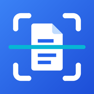

Nitidoc
Escanea. Organiza. Siempre contigo.
Nitidoc convierte tu celular en un escáner de documentos nítido, ordenado y seguro.
Descargar en Google Play- Escanea documentos en alta calidad, con detección de bordes y recorte automático.
- Cédula, licencia y pasaporte paso a paso, a tamaño real.
- Firma, edita y comparte en PDF o imagen.
- Abre PDF, Word, Excel y CSV.
- Respaldo opcional en tu propio Google Drive.
- Nitidoc Pro (pago único): sin anuncios, comprimir, contraseña, marca de agua y convertir a Word.